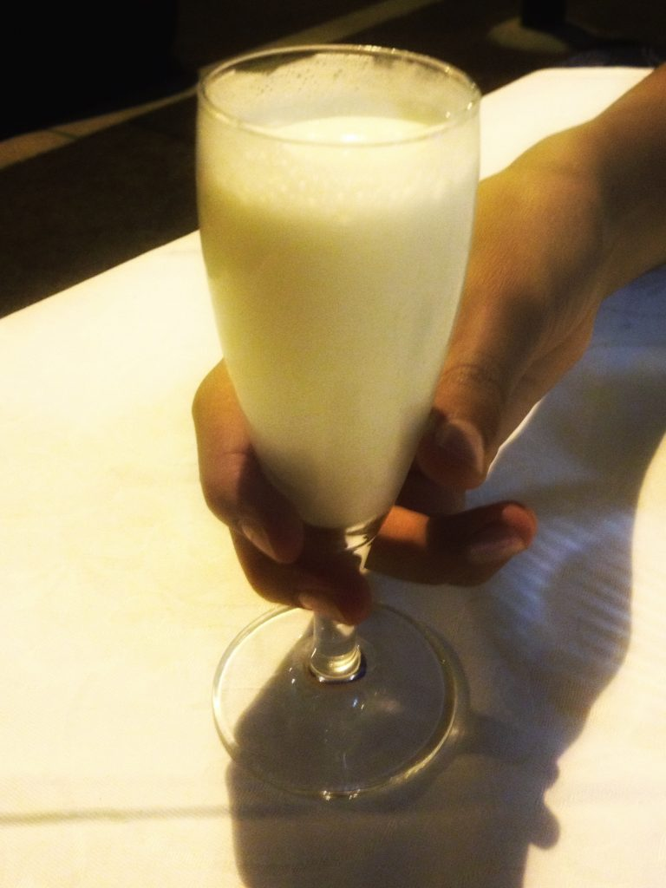

Photo by Francesca Tosolini
The sgroppino, also known as sorbetto al limone, is a drink made of lemon gelato, vodka and Prosecco (a sparkling white wine). Originated in Venice, it is a delicious and refreshing drink to sip during the hot Italian summers, especially after dinner. Don't forget to order it if you happen to be in a restaurant or a bar. {Part of this article is an excerpt from chapter 3 “Italian cuisine and food establishments” of the eBook “Italy from the Inside. A native Italian reveals the secrets of traveling in Italy”}